Wall Dodger
My first presonal passion project! I've always enjoyed endless runners, and so
naturally when Summer 2020 came, I decided it was time to try my hand at making
one myself. I had no idea what procedural generation was, much less how infinite
runners worked behind the scenes. Lots of research and planning was required as a
result, and I'm pretty happy with how this turned out, despite it looking nothing
like the original plan.
Besides a purely random pathway, the program can also spawn "predefined" terrain
types; these include zigzags, obstacles in the middle of the pathway, and even
a giant roundabout!
Dates:
May - Jul 2020
Language(s):
C#
Engine/Framework:
MonoGame
Assets:
MS Paint
Check it out here.
 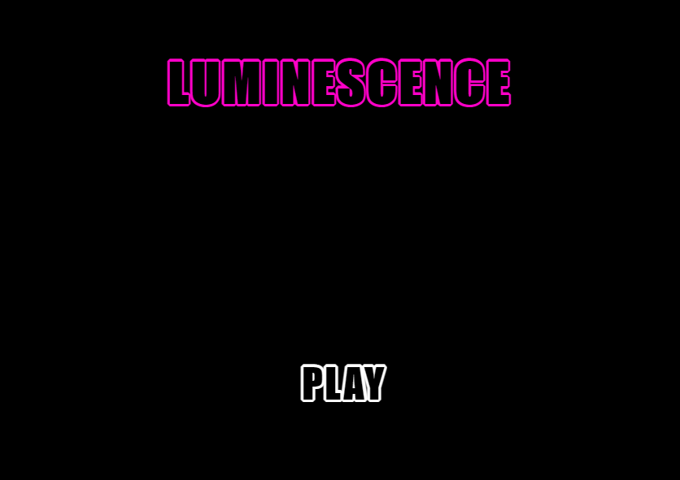
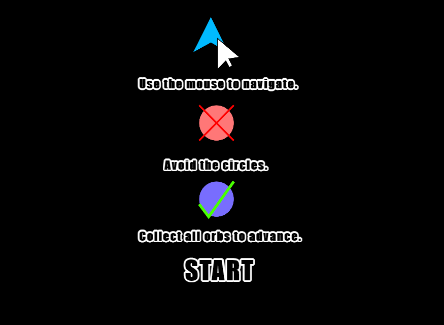
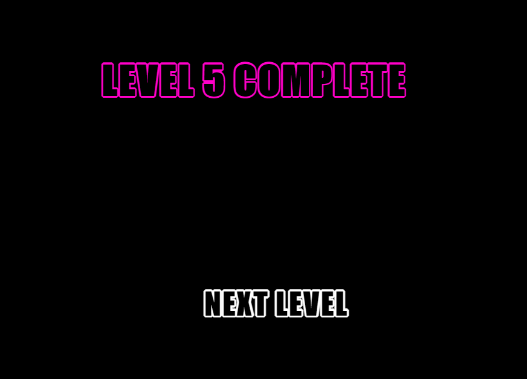
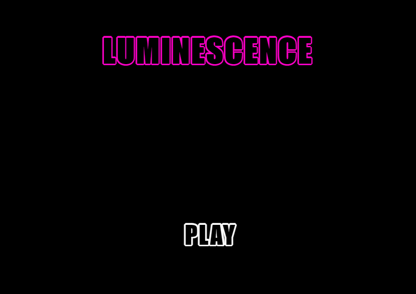
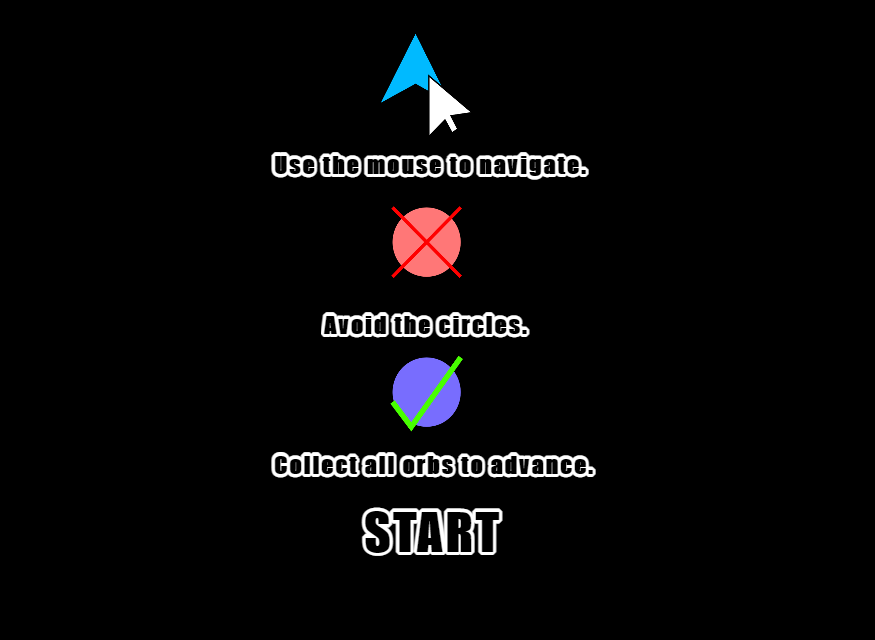
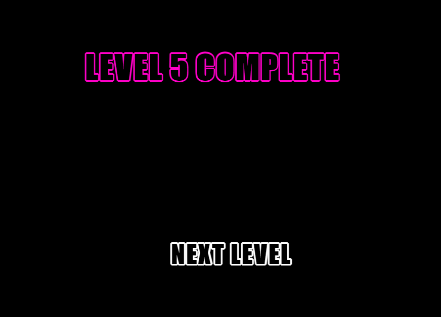
Luminescence
This was an individual project completed as part of coursework for a web design class
at RIT. It is a simple 2D avoid-and-collect game where the player must control an
onscreen sprite using their mouse to collect all orbs within a level in order to
advance. However, circles must be avoided at all costs!
This was my first game/interactive experience created using JavaScipt.
The idea was to make an experience that was immersive yet extremely simple to pick
up and play. The webpage was thus designed to amplify the immersion.
The game does come with sound effects. Either turn the volume up or down, or mute
the browser tab entirely - your preference!
Dates:
May 2021
Language(s):
JavaScript ES5/6
Engine/Framework:
PixiJS
Assets:
opengameart.org
vectr.com
Check it out here.
 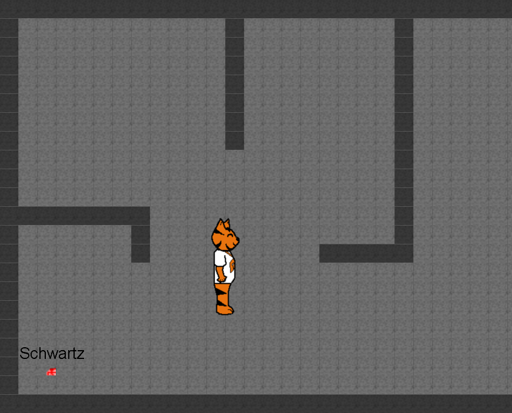
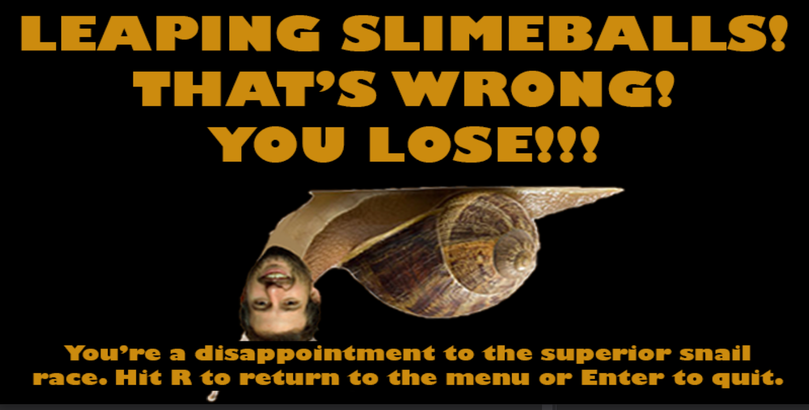
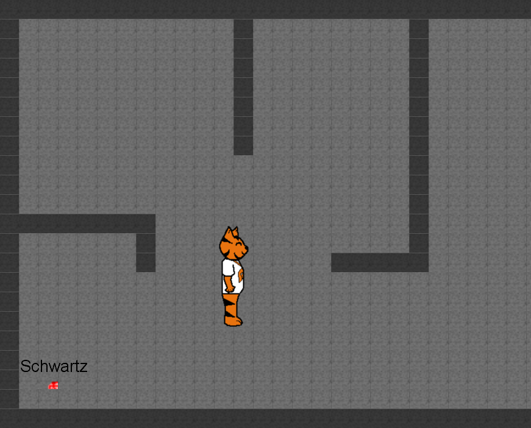
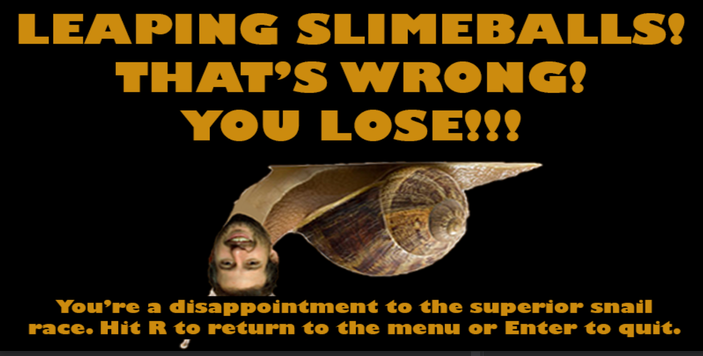
Schwartz's Sneaky Snail-Mail Scandal (SSSMS)
SSSMS was a title created for a semester-long group project in the second course of my
introductory programming sequence. The game is set in RIT's IGM department, and you
play as an investigator tasked with finding out the cause - or perhaps individual -
behind Professor David Schwartz's spam-filled email inbox!
SSSMS was my first large team project. I helped create the storyline and
game design, programmed core mechanics, and contributed to project management. I also
learned about remote collaboration, due to COVID-19 forcing the shift to online
instruction mid-semester. My team and I ended up polishing the game
further over the course of the summer.
Dates:
Jan - Jul 2020
Language(s):
C#
Engine/Framework:
MonoGame
Assets:
Piskel
Check it out here.
 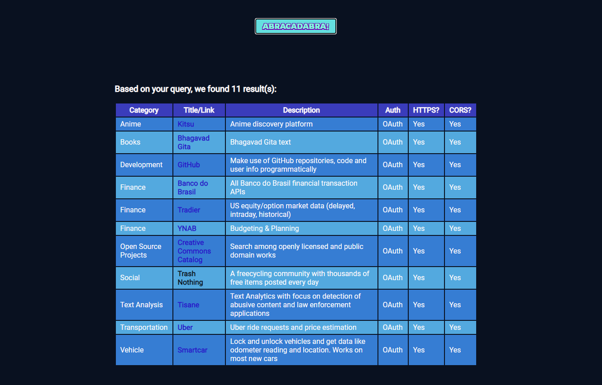
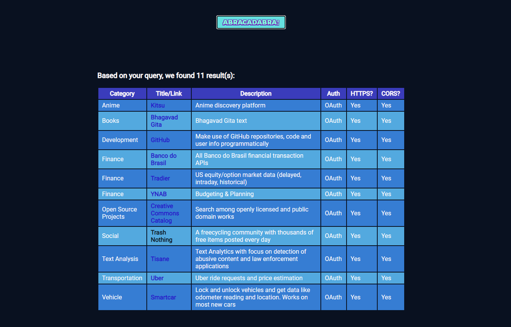
API Search Wizard
This was another individual project for the same RIT web design class mentioned in
Project 2. The task was to create a web application that revolved around using a
free and public API of choice. I decided on this so-called "public API of public
APIs", as I found the concept interesting.
I created this application with the hopes of making the API selection process
for this specific project simpler and more straightforward for future students taking
this course. The theme was heavily inspired by the darker tones that galaxy colour
schemes tend to offer, but I tailored it to match the loading animation that
I'd picked out. It's the magic wand in the lower-left screenshot!
Dates:
Apr 2021
Language(s):
JavaScript ES5/6
Engine/Framework:
N/A
Assets:
GIPHY
Check it out here.